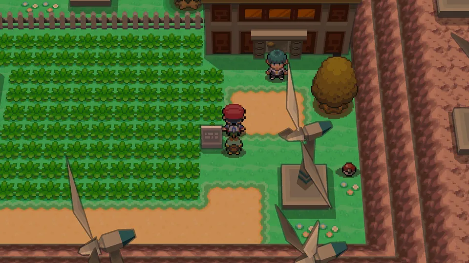
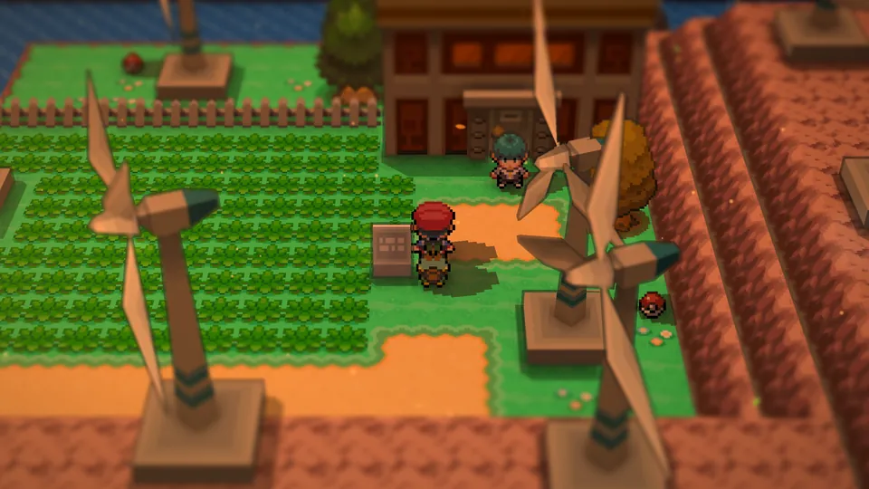
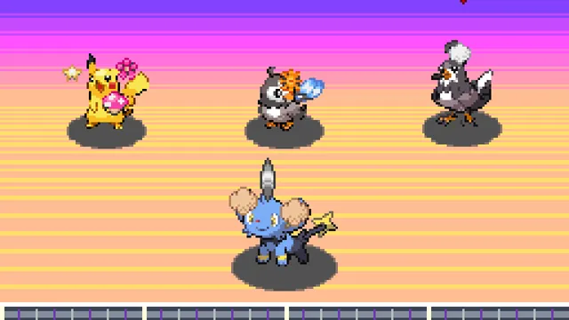
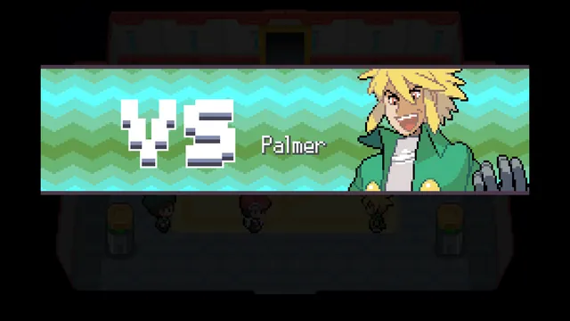
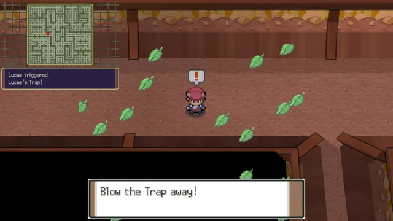
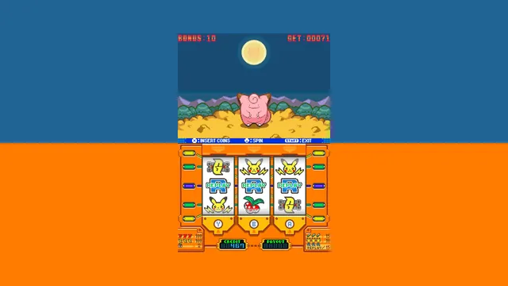

The story
The whole game, to the credits
Spear Pillar 
Distortion World 
Giratina 
Pokémon League 
BetaPlayable now, in your browser
Pokémon Platinum, rebuilt from the ground up. A new engine plays the game from your own ROM, on desktop, tablet and phone (iPhone and Android).
Runs right in your browser. No emulator, no download.
Free and open source. Your ROM never leaves your device.
Beta: playable to the credits, still being playtested. Expect rough edges, and export your saves. Report bugs on Discord

The engine
OpenSinnoh doesn't emulate a DS or run the game's code. Your ROM is taken apart once, in your browser, into open parts, and a new engine puts the game back together.
TypeScript, three.js and the Pokémon Showdown battle simulator.
Features
Contests, the Battle Frontier, the Underground and the town extras are all in. If you like, the game can look better than it did on a DS.

DS

Cinematic + angled camera
The same moment twice. Cinematic adds depth of field, bloom, evening light and long shadows; the angled camera looks along the path. Both are optional, in Options › Device.
Fast-forward up to 8×, auto-run, an item wheel, EV and IV view, a suspend point, remapping and zoom. All optional.
A mod is a small pack that patches the game's records and scripts. A demo mod comes with the game, in Options › Data. No mod editor yet.

Visual, dance and acting rounds.

All five facilities and their Brains.

Treasure, traps and secret bases.

Slots with the DS's odds.
Seals and Ball Capsules · the Villa · TV broadcasts · Vs. Seeker · HM cut-ins · the shiny sparkle · following Pokémon (HeartGold's sprites as an add-on, from your own ROM) · touch controls · save import and export · screen-reader support
Desktop, tablet or phone, in portrait or landscape. Installable on iPhone and Android.
MIT-licensed. Fork it and take it somewhere new. Start with the contributing guide.
The story
Get started
Go to play.opensinnoh.com.
The Pokémon Platinum file you made from your own cartridge.
The import takes about 15 seconds. After that it starts offline.
We never host, receive or see your ROM. Nothing is uploaded, and OpenSinnoh ships no Nintendo code, art, text or music.
The engine is MIT-licensed. Read the code, report issues and contribute on GitHub.
Follow along, report bugs and see what's next on Discord.
FAQ
OpenSinnoh contains no Nintendo content. You need to own the game and make the ROM from your own cartridge; the rules on backups differ by country. We don't link to ROMs.
Pokémon Platinum, US version. HeartGold or SoulSilver (US) is an optional add-on.
Not yet: it's in beta. The story plays to the credits; the post-game is in progress, and it's still being playtested, so expect rough edges and export your saves. Report bugs on Discord.
In your browser, on your device. Export a save file from Options › Data to back it up or move it.
No account and no ads. We count visits anonymously, without cookies. Error reports only if you allow them.